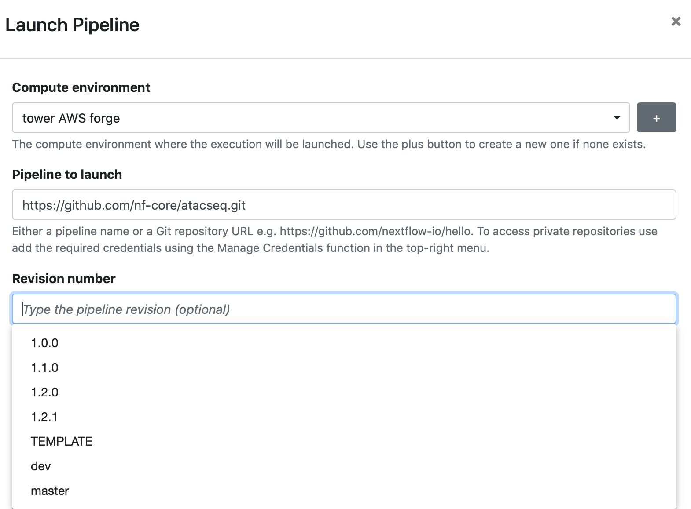

Git integration
Overview#
Data pipelines can be composed of many assets (pipeline scripts, configuration files, dependency descriptors such as for Conda or Docker, documentation, etc). By managing complex data pipelines as Git repositories, all assets can be versioned and deployed with a specific tag, release or commit id. Version control, combined with containerization, is crucial for enabling reproducible pipeline executions, and it provides the ability to continuously test and validate pipelines as the code evolves over time.
Nextflow has built-in support for Git and several Git-hosting platforms. Nextflow pipelines can be pulled remotely from both public and private Git-hosting providers, including the most popular platforms: GitHub, GitLab, and BitBucket.
Public repositories#
You can use a publicly hosted Nextflow pipeline by specifying the Git repository URL in the Pipeline to launch field.
When specifying the Revision number, the list of available revisions are automatically pulled using the Git provider's API. By default, the default branch (usually main or master) will be used.

Tip
nf-core is a great resource for public Nextflow pipelines.
API Rate Limits
The GitHub API imposes rate limits on API requests. You can increase your rate limit by adding GitHub credentials to your workspace as shown below.
Private repositories#
In order to access private Nextflow pipelines, you must add credentials for your private Git hosting provider.
Note
All credentials are (AES-256) encrypted before secure storage and are not exposed in an unencrypted way by any Tower API.
Multiple credential filtering#
When your Tower instance has multiple stored credentials, selection of the most relevant credential for your repository takes precedence in the following order:
-
Tower evaluates all the stored credentials available to the current Workspace.
-
Credentials are filtered by Git provider (GitHub, GitLab, Bitbucket, etc.)
-
Tower selects the credential with a Repository base URL most similar to the target repository.
-
If no Repository base URL values are specified in the Workspace credentials, the the most long-lived credential is selected.
Example:
Workspace A contains 4 credentials:
Credential A
1 2 3 | |
Credential B
1 2 3 | |
Credential C
1 2 3 | |
Credential D
1 2 3 | |
If you launch a pipeline with a Nextflow workflow residing in https://github.com/pipeline-repo, Tower will use Credential C.
To ensure automatic selection of the most appropriate credential for your repository, we recommend that you:
-
Specify Repository base URL values as precisely as possible for each Git credential used in the Workspace.
-
Favor the use of service account type credentials where possible (such as GitLab group access tokens).
-
Avoid the use of multiple user-based tokens with similar permissions.
GitHub#
To connect a private GitHub repository, personal (classic) or fine-grained access tokens can be used.
Note
A personal access token (classic) can access every repository that the user it belongs to can access. GitHub recommends that you use fine-grained personal access tokens (currently in beta) instead, which you can restrict to specific repositories. Fine-grained personal access tokens also enable you to specify granular permissions instead of broad scopes.
For personal (classic) tokens, you must grant access to the private repository by selecting the main repo scope when the token is created. See here for instructions to create your personal access token (classic).
For fine-grained tokens, the repository's organization must opt in to the use of fine-grained tokens. Tokens can be restricted by Resource owner (organization), Repository access, and Permissions. See here for instructions to create your fine-grained access token.
Once you have created and copied your access token, create a new credential in Tower using these steps:
-
Navigate to the Credentials tab. If you are using your personal workspace, select Your credentials from the user icon menu (top right).
-
Select Add Credentials.
-
Enter a Name for the new credentials.
-
Select "GitHub" as the Provider.
-
Enter your Username and Access token.
-
Enter the Repository base URL for which the credentials should be applied (recommended). This option can be used to apply the provided credentials to a specific repository, e.g.
https://github.com/seqeralabs.
GitLab#
GitLab supports Personal, Group, and Project access tokens for authentication. Your access token should have the api, read_api, and read_repository scopes in order to work with Tower. For all three token types, the token value is used for both the Password and Access token fields in the Tower credential creation form.
To connect Tower to a private GitLab repository:
-
Navigate to the Credentials tab. If you are using your personal workspace, select Your credentials from the user icon menu (top right).
-
Select Add Credentials.
-
Enter a Name for the new credentials.
-
Select "GitLab" as the Provider.
-
Enter your Username. For Group and Project access tokens, the username can be any non-empty value.
-
Enter your token value in the Password and Access token fields.
-
Enter the Repository base URL (recommended). This option is used to apply the credentials to a specific repository, e.g.
https://gitlab.com/seqeralabs.
Gitea#
Available from Tower 22.4.X
To connect to a private Gitea repository, supply your Gitea user credentials to create a new credential in Tower with these steps:
-
Navigate to the Credentials tab. If you are using your personal workspace, select Your credentials from the user icon menu (top right).
-
Select Add Credentials.
-
Enter a Name for the new credentials.
-
Select "Gitea" as the Provider.
-
Enter your Username.
-
Enter your Password.
-
Enter your Repository base URL (required).
Bitbucket#
To connect to a private BitBucket repository, refer to the BitBucket documentation to learn how to create a BitBucket App password. Then, create a new credential in Tower using these steps:
-
Navigate to the Credentials tab. If you are using your personal workspace, select Your credentials from the user icon menu (top right).
-
Select Add Credentials.
-
Enter a Name for the new credentials.
-
Select "BitBucket" as the Provider.
-
Enter your Username and Password.
-
Enter the Repository base URL (recommended). This option can be used to apply the provided credentials to a specific repository, e.g.
https://bitbucket.org/seqeralabs.
AWS CodeCommit#
To connect to a private AWS CodeCommit repository, refer to the AWS documentation to learn more about IAM permissions for CodeCommit. Then, supply the IAM account access key and secret key to create a credential in Tower using these steps:
-
Navigate to the Credentials tab. If you are using your personal workspace, select Your credentials from the user icon menu (top right).
-
Select Add Credentials.
-
Enter a Name for the new credentials.
-
Select "CodeCommit" as the Provider.
-
Enter the Access key and Secret key of the AWS IAM account that will be used to access the desired CodeCommit repository.
-
Enter the Repository base URL for which the credentials should be applied (recommended). This option can be used to apply the provided credentials to a specific region, e.g.
https://git-codecommit.eu-west-1.amazonaws.com.
Self-hosted Git#
It is also possible to specify Git server endpoints for Tower Enterprise. For more information, refer to the Tower Install Documentation.